Gry Blockly - Labirynt
Link do gry: https://blockly.games/maze?lang=pl
Zadanie 1
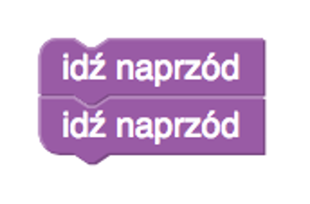 Poruszamy się do przodu.
Zadanie 2
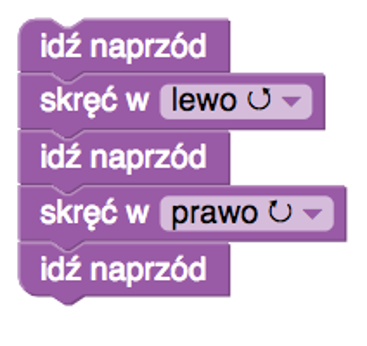 Poruszamy się do przodu i skręcamy.
Zadanie 3
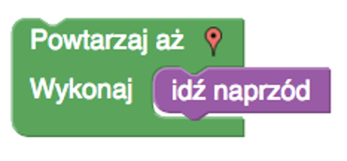
- Możemy wykorzystać jedynie dwa bloki.
- Jednak droga wymagałaby użycia instrukcji idź naprzód co najmniej 6 razy.
- Wymusza to zastosowanie pętli – struktury wymuszającej powtarzanie instrukcji.
Zadanie 4
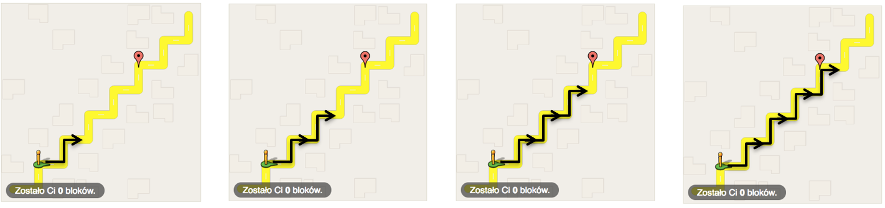 Powtarzalny schemat poruszania się po labiryncie.
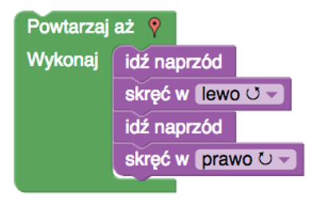
- Ponownie ilość kroków do wykonania przekracza limit bloków zadania.
- Zauważmy jednak, że możemy wyróżnić powtarzalny schemat poruszania się po labiryncie.
- Szukamy minimalnej powtarzalnej ilości kroków – zestawu instrukcji.
Zadanie 5
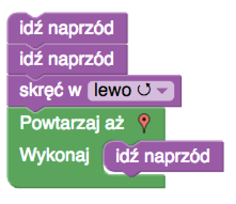
- Możemy zauważyć, że fragment drogi można przejść powtarzając instrukcję idź naprzód.
- Jednak najpierw musimy dotrzeć do tego fragmentu.
- Co robimy przy pomocy dwóch instrukcji idź naprzód i instrukcji skręć w lewo.
-
Zauważmy, że zapis algorytmu składa się z dwóch części:
- Pierwszej - liniowej.
- Drugiej - pętli.
Zadanie 6
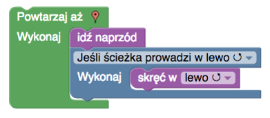
- W tym zadaniu dochodzi nowa instrukcja: instrukcja warunkowa.
- Zauważmy, że będziemy wykonywać jedynie skręt w lewo.
- Cały czas idziemy naprzód.
- A jeśli jest możliwość skrętu w lewo, to skręcamy.
Zadanie 7
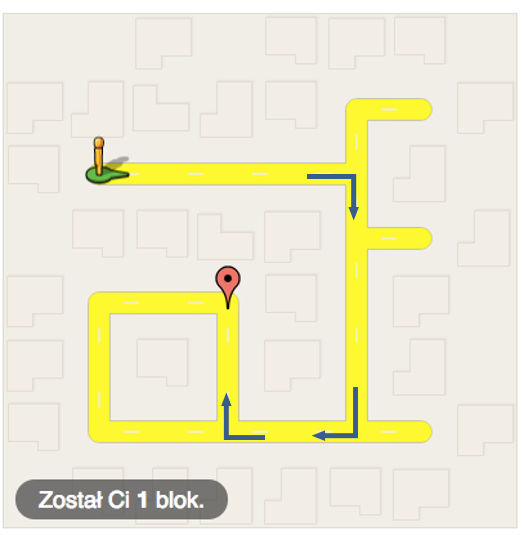 Zauważmy, że najprostsza droga do celu to skręcenie trzy razy w prawo.
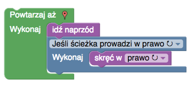
- Poruszamy się więc cały czas prosto.
- A jak możemy skręcić w prawo, to skręcamy.
Zadanie 8
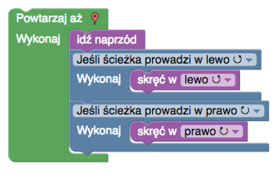
- Zauważmy, że w tym zadaniu nie możemy zabłądzić.
- Droga nie ma rozgałęzień.
- Wystarczy, że będziemy skręcać razem z drogą.
- Dlatego poruszamy się cały czas prosto.
- I sprawdzamy, czy mamy możliwość wykonania skrętu w lewo lub prawo.
Zadanie 9
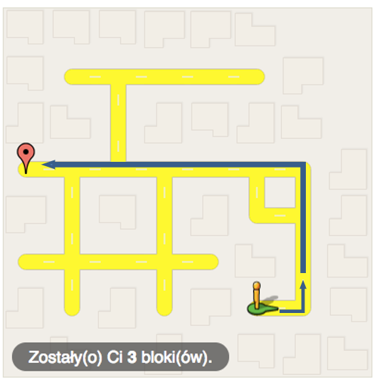 Zwróćmy uwagę na to, jak wygląda najprostsza droga do celu.
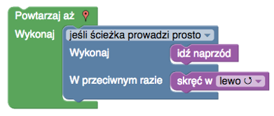
- Łatwo zauważyć, że jedyny skręt jaki wykonamy, to skręt w lewo.
- Jednak nie chcemy skręcać zawsze, gdy ścieżka prowadzi w lewo.
- Skręcamy tylko wtedy, gdy nie możemy już iść prosto.
- Dlatego używamy pełnej instrukcji warunkowej.